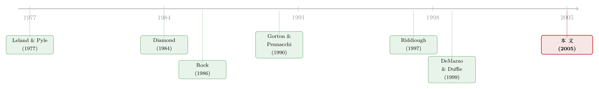

把资产「打包」再「切片」：一个关于知情中介的模型
本文读的是 DeMarzo (2005, Review of Financial Studies)：当卖方对资产价值掌握私人信息时，单纯把资产「打包」(pooling) 出售是有害的——它毁掉了卖方逐个资产相机决策的「期权」，这就是信息毁灭效应；但只要允许卖方在资产池之上发行一只衍生证券、并把池子「切片」(tranching)，风险分散效应就会随池子变大而压倒信息毁灭效应，于是「打包 + 切片」反而最优。这一正一反的两股力量，恰好支撑起一个知情金融中介的动态模型。
1 一个无处不在、却「本不该存在」的现象
先看一个事实。住房抵押贷款被成百上千笔地塞进一个信托，然后这个信托被切成一档档 (tranches) 性质迥异的证券卖给投资者，加总起来正好是信托的 100% 权益——这就是 抵押贷款支持证券 (mortgage-backed securities, MBS)。同样的手法被搬到了汽车贷款、信用卡应收款、商业地产，乃至把一堆垃圾债打包再切出一档投资级「债」和一小片承接违约风险的「股」的 担保债券凭证 (collateralized bond obligation, CBO)。更夸张的是「kitchen-sink bond」：把别的资产支持证券里剩下的残值碎片再聚成一池，又从中切出一只低风险的债。
这套「打包—再切片—再打包」的游戏，规模庞大、利润可观。可问题在于：在一个完美的资本市场里，这种重新包装应该是完全无关紧要的 (irrelevant) 的。你把同样的现金流换个容器装一遍，凭什么就凭空多出了价值？
要解释「重新包装」的收益，有三个嫌疑人：交易成本、市场不完全、以及信息不对称。本文盯住的是第三个。理由也很硬：市场不完全解释不了纯粹的「过手」(pass-through) 池——它根本没有扩张可交易证券的张成空间；它也解释不了 CBO，因为切出来的债和股市场上早有替代品。交易成本能说明「为什么要打包」，却说不清「打包之后为什么要切成这些碎片」。于是，信息不对称成了那个能把全部细节串起来的故事。
别被「MBS 的资产信息都是公开的」骗了。本文引用 Bernardo and Cornell (1997)：在 MBS 拍卖里，参与的全是老练投资人和投行，可中标价平均比中位报价高出 17% 以上。原因不是公开信息有差异，而是各家给这些证券定价的模型是专有的 (proprietary)——你自己模型算出的估值，本身就是一份私人信息。
2 先把问题缩到最小：一个知情卖方，几份资产
DeMarzo 的做法很「随机分析」：先把场景剥到只剩骨架，再一步步加回血肉。
设一个发行人手里有 \(n\) 份资产，但他更想要现金。每份资产 \(i\) 的最终收益是
$$Y_i = X_i + Z_i.$$
这里 \(X_i\) 是发行人的私人信息，\(Z_i\) 是他面对的剩余风险。第一个假设其实不损失一般性：
$$E[Z_i \mid X] = 0, \quad \text{i.e.} \quad X_i = E[Y_i \mid X].$$
也就是说，\(X_i\) 浓缩了发行人关于资产 \(i\) 期望现金流的全部所知。另有一个温和但实质的假设：给定其他资产的信息 \(X_{-i}\)，\(X_i\) 的条件支撑有一个严格为正的下确界 \(x_{i0} > 0\)——无论别的贷款好坏，「最坏情形」下这份资产仍保留一点正的「期权」价值。
发行人是风险中性的，但贴现因子 \(\delta < 1\)（因为他手上有更赚钱的去处，所以更偏好现金落袋）。如果他按价格 \(p\) 卖掉整池的一个比例 \(q\)，那么他的期望收益是
把上式拆开看，发行人的总收益 = 自己的贴现保留价值 + 卖出环节赚到的「利润」。面对市场需求曲线 \(P(q)\)，他要选一个卖出比例去最大化这块利润：
$$\Pi^P(x) = \max_{q\in[0,1]} q\,\big(P(q) - \delta x\big).$$
这一步是全文的引擎。 关键观察是：对固定的 \(q\)，目标函数关于 \(x\) 是一条斜率为 \(-q\delta\) 的直线；而 \(\Pi^P\) 是所有这些直线的上包络 (upper envelope)，所以它一定是 \(x\) 的凸函数，并且随 \(x\) 递减。同时，卖出比例 \(Q^P(x)\) 关于 \(x\) 递减——这就是 Leland 和 Pyle、以及 DeMarzo 和 Duffie 那条经典直觉：好资产，卖方舍不得多卖，靠「留一手」来发信号 (signaling)。
沿用 DeMarzo and Duffie (1999) 的刻画，存在唯一的分离均衡 (separating equilibrium)：
$$Q^*(x) = \Big(\tfrac{x}{x_0}\Big)^{-\frac{1}{1-\delta}}, \qquad P^*(q) = x_0\, q^{\,\delta-1},$$
均衡利润函数
$$\Pi^*(x) = \pi\!\Big(\tfrac{x}{x_0}\Big)\,x_0, \qquad \pi\!\Big(\tfrac{x}{x_0}\Big) = (1-\delta)\Big(\tfrac{x}{x_0}\Big)^{-\frac{\delta}{1-\delta}}.$$
注意一个漂亮的性质：均衡只取决于资产真值与其最坏情形之比 \(x/x_0\)，而 \(\pi\) 是严格凸且递减的。有没有显式解其实不重要——凸性，是从 Lemma 1 里白拿的。
3 第一个反转：打包，是在「毁信息」
现在问那个自然的问题：把 \(n\) 份资产捏成一个池子整体卖，和一份份分开卖，哪个更划算？
分开卖时，卖资产 \(i\) 面对的就是把 \(X^n\) 换成 \(X_i\) 的同一个问题；由于均衡只依赖最坏情形 \(x_{i0}\)，而最坏情形不受其他资产信息的影响，所以每份资产的分离均衡互不干扰，总利润是 \(\sum_i \pi(X_i/x_{i0})\,x_{i0}\)。整体打包卖，则是 \(\pi(X^n/x_0^n)\,x_0^n\)，其中 \(x_0^n = \sum_i x_{i0}\)。于是有：
$$\sum_{i=1}^{n} \pi\!\Big(\tfrac{X_i}{x_{i0}}\Big) x_{i0} \;\ge\; \pi\!\Big(\tfrac{X^n}{x_0^n}\Big) x_0^n.$$
证明只是 Jensen 不等式：以 \(x_{i0}/x_0^n\) 为权重，由 \(\pi\) 的凸性，
$$\sum_i \tfrac{x_{i0}}{x_0^n}\,\pi\!\Big(\tfrac{X_i}{x_{i0}}\Big) \;\ge\; \pi\!\Big(\sum_i \tfrac{x_{i0}}{x_0^n}\cdot\tfrac{X_i}{x_{i0}}\Big) = \pi\!\Big(\tfrac{X^n}{x_0^n}\Big),$$
只要各资产的 \(X_i/x_{i0}\) 不全相等，不等式就严格成立。
这就是信息毁灭效应 (information destruction effect)。 直觉是这样的：因为卖方握着「卖多少」的期权，他的利润关于私下观察到的质量是凸的。凸，意味着他偏爱「极端」——对好资产惜售、对差资产多抛——而打包恰恰抹掉了这种逐个资产相机抉择的能力，把高质量和低质量强行揉成了一个「中等质量」的池。Leland 和 Pyle 当年猜想「把很多项目合并能降低信号成本」，本文在这里给出的答案是：纯粹打包做不到，反而会蚀本。 而且这个结论只靠 \(\pi\) 的凸性，不靠它的具体函数形式——所以它推广到风险厌恶的 Leland–Pyle 框架同样成立。
4 真正关键的一步：切片，把风险「分散」掉
如果故事到此为止，那资产证券化市场就不该存在了。但真正关键的一步，是允许发行人在卖之前先设计一只衍生证券。
不再直接卖资产 \(i\) 的份额，而是创设一个支付 \(F(Y)\) 的证券（限定有限责任，\(F(y)\in[0,y]\)，且为便于处理只考虑非减函数）。令这只证券的条件期望支付为 \(f \equiv E[F(Y)\mid X]\)，其支撑为 \([f_0, f_1]\)。结构完全平移自前面的问题，于是均衡利润同样是
$$\Pi^*(f) = \pi\!\Big(\tfrac{f}{f_0}\Big) f_0.$$
奥妙就藏在这里。在纯打包里，风险中性让剩余风险 \(Z\) 毫无作用；可一旦要设计非线性的证券 \(F\)，\(Z\) 就变成了主角——它决定了你能把这只证券的信息敏感度压到多低。当池子足够大、各资产的剩余风险 \(Z_i\) 又不高度相关时，根据大数定律，池子的总剩余风险被分散掉了，于是你可以从这个大池子里切出一只近乎无风险、对私人信息几乎不敏感的低风险债档。信息越不敏感，柠檬问题就越轻，证券就越流动。
这就是风险分散效应 (risk diversification effect)。它和信息毁灭效应方向相反：随着池子规模变大，风险分散效应最终压倒信息毁灭效应，「打包 + 切片」对知情发行人变成最优。Diamond (1984) 当年也是靠「把大量独立证券聚到一起，中介就能提供近乎无风险的债务合约」——本文把这条直觉，从「监督成本」搬到了「逆向选择成本」上。
注意这里和纯打包的微妙差别：打包本身（pooling）依旧毁信息，是有害的；真正创造价值的是「打包之后再切出一只低信息敏感度的债档」。两者缺一不可——只打包不切片，仍输给分开卖。
5 第二个反转：换成「不知情」的卖方，结论翻过来
故事还有另一面。前面假设卖方是知情的。可现实里很多资产是由「发起人」(originators) 创造的——他们擅长营销与客服，却未必比买方更懂资产价值。当买方里潜伏着更精明的知情中介时，发起人就成了那个信息劣势方。
这下场景变成了 Rock (1986) 那个经典的 IPO 折价 (underpricing) 故事：知情者专挑好资产买，发起人为了卖得出去，只能整体折价。而此时——纯打包反而是好事。因为打包阻止了知情买方「只挑池子里最优质的部分下手」，从而缓解了发起人面对的逆向选择。于是对不知情卖方，纯打包优于分开卖；这一点与 Axelson (1999) 在拍卖框架下的结论遥相呼应。
把这两面拼起来，一个知情中介的动态模型就浮现了：不知情的发起人打包资产以减少折价；知情中介买走其中质量最高的那些池子；然后，为了腾出资本去买下一批被低估的资产，中介把这些资产池再打包、再切片，发行低信息敏感度的证券档卖出去。重新包装的能力，放大了信息的回报——中介能用同样的资本撬动更多的「低买高卖」。
这套机制和真实市场严丝合缝：抵押贷款发起人把 20–30 笔贷款打成过手型 MBS（1995 年以来美国超过 50% 的新增按揭都这么处理），再卖给中介；中介把 100–300 个这样的池子组合成一个 REMIC，发行 担保抵押凭证 (collateralized mortgage obligation, CMO)，其中最流动的那几档被刻意设计得对提前还款风险不敏感——正因为中介自己最擅长给提前还款风险定价。而且与模型一致：中介卖掉很多 CMO，却也为自家账户留下相当大的份额。
（关于「先把资产卖给一个中间商反而能治好柠檬市场」这条更一般的直觉，可参见《承诺去交易：为什么「先卖给中间商」反而能治好柠檬市场》；而把分离均衡、折价与证券设计绑在一起的另一种处理，可见《自由进入的市场里，为什么钱还能「白赚」？》。)
6 文献脉络
把这条线捋一捋。源头是 Leland and Pyle (1977)：风险厌恶的创业者靠保留股权给公司价值发信号，市场的需求曲线理性地向下倾斜——并顺手抛出了那个「合并多个项目能降低信号成本」的猜想。Diamond (1984) 从另一端切入：基于事后信息不对称的委托监督 (delegated monitoring)，中介做大之后能提供近乎无风险的债。Rock (1986) 则给出了逆向选择导致 IPO 折价的范本。
进入九十年代，Gorton and Pennacchi (1990) 让一个（不知情的）中介把现金流劈成无风险债和股，供不知情者交易避险；Glaeser and Kallal (1997) 与 Riddiough (1997) 直接讨论资产支持证券的设计，后者指出「切出一只无风险证券」有好处。而 DeMarzo and Duffie (1999) 奠定了本文的技术底座——基于流动性的证券设计，债是最优合约，信号靠保留比例传递。

本文 DeMarzo (2005) 站的位置很清楚：它接住了 Leland–Pyle 那个失败的猜想（纯打包不行），又用「打包 + 切片」把它救活（切片可以），并第一次把「信息毁灭」与「风险分散」两股力量放进同一个框架里对冲，从而内生出一个知情中介的动态图景。它比 Riddiough 更一般——不要求切出来的那一档必须无风险。
7 评论与延伸（Q&A + 研究方向）
（a）几个可能的疑问
Q：「信息毁灭效应」到底是从哪儿冒出来的？是风险中性带来的吗？
不是。它来自卖方利润函数 \(\Pi^P(x)\) 关于私人质量 \(x\) 的凸性，而凸性来自「卖多少」是一只期权（利润是一族线性函数的上包络）。凸函数偏爱极端值，打包却把极端抹平成中位，所以蚀本。这个论证只用凸性、不用具体函数形式，因此推广到风险厌恶的 Leland–Pyle 设定照样成立。
Q：既然打包有害，为什么现实里资产证券化还铺天盖地？
因为现实里几乎从不「纯打包」。真正在做的是「打包之后切出一只低信息敏感度的债档」。打包本身仍在毁信息，但当池子大、剩余风险 \(Z\) 不高度相关时，风险分散效应让你能切出一只近乎无风险、因而高度流动的证券，这块收益压倒了信息毁灭的损失。
Q：对「知情卖方」和「不知情卖方」，结论为什么正好相反？
知情卖方的痛点是「信号成本」——他要靠惜售证明质量，打包毁掉了逐个发信号的能力。不知情卖方的痛点是「被知情买方挑拣」——打包恰恰挡住了买方只摘好果子，缓解逆向选择。同一个动作（打包），在两种信息位置上踩中的是完全不同的摩擦。
Q：模型为什么死死盯住「最坏情形」\(x_0\)，而几乎不看 \(X\) 的整个分布？这正常吗？
这是所有分离均衡的通病：均衡对支撑下界 \(x_0\) 极敏感，对分布形状却不敏感，乍看很不自然。DeMarzo 自己也承认这点，并在第 6 节的动态模型里说明 \(x_0\) 是如何内生地由 \(X\) 的完整分布决定的——它不是外生硬塞的参数。
Q：为什么切出来的那一档非得是「债」，而不是别的形状？
因为在 DeMarzo–Duffie 的逻辑里，卖方的逆向选择损失随证券的信息敏感度上升；而在「有限责任 + 单调」的约束下，能把信息敏感度压到最低的，正是优先级最高的债务型档。风险分散把池子的剩余风险摊薄之后，这只债档逼近无风险，信息租金趋于零。
Q：这套「资产」的故事能搬到公司金融上吗？
作者在脚注里点了一句：公司的债、股本身就可以看成把底层人力与实物资产重新包装的结果。所以「信息毁灭 vs 风险分散」的张力，原则上也能用来思考公司为什么这样切分自己的资本结构——只是本文没有展开。
（b）几个可能的研究问题与提案
-
CBO/CLO 档位结构与发行人私人信息的实证检验。 【经济故事】模型预言：发行人越知情、底层资产剩余风险越不相关，越应该切出更厚、更低信息敏感度的优先档，并自留股权档。 【可行性】中。CLO 的分档结构、底层贷款、以及发行人自留比例 (risk retention) 在 Intex、Creditflux 等数据里可得；难点在于「发行人私人信息」无法直接观测，需要用底层资产异质性或事后违约偏差做代理，识别偏弱。
-
「自留份额」作为信息租金的直接度量。 【经济故事】模型里中介卖掉多数档却自留相当份额——这正是信号。自留比例应与底层资产的信息敏感度正相关。 【可行性】高。Dodd–Frank 风险自留规则提供了一个准自然实验：规则实施前后，自留比例的变化与发行定价、二级市场流动性的关系可做事件研究 (event study)。数据现成，识别相对干净。
-
公司债大宗市场里的「打包—切片」直觉。 【经济故事】把一篮子流动性差的公司债打包再切片，是否真能造出一只更流动的优先证券？这与外资/机构持有人的信息优势如何互动？ 【可行性】中。TRACE 提供成交与流动性度量，持有人结构可用 eMAXX/Lipper 拼接；难点是公司债的「切片」远不如 MBS 标准化，可比样本有限。
-
池子相关性结构与债档评级的关系。 【经济故事】模型的命门是「剩余风险不高度相关」——一旦底层资产相关性上升，风险分散效应失灵，优先档应变薄、利差应变宽。2008 正是这个机制崩塌的现场。 【可行性】高。底层资产相关性可由行业/地域集中度构造，档位厚度与利差可观测，跨危机前后做截面 + 时序双重检验，是一个 doable 且有政策含义的题。
8 我的判断
这篇论文的贡献，在于它用一个极简的凸性论证，把「打包」这件看似无害的金融工程动作，拆成了两股方向相反的力——信息毁灭与风险分散——并指出真正创造价值的从来不是打包本身，而是打包之后的那一刀切片。更漂亮的是，同一套零件换个信息位置（知情卖方 → 不知情发起人 + 知情买方），就自动长出了一个知情中介的动态生态，和 MBS/CMO/CBO 市场的细节对得严丝合缝。在「为什么资产证券化存在」这个问题上，它给出的答案既干净又有解释力。
要说担忧，主要是两点。其一，分离均衡对支撑下界 \(x_0\) 的过度依赖——尽管作者在动态模型里把 \(x_0\) 内生化，但整套结论对「最坏情形」假设的稳健性，仍值得更细致地推敲；现实里资产的最坏情形未必独立于其他资产的信息。其二，模型为了可处理性把证券限定为单调函数、把市场利率设为零、把投资者设为风险中性——这些都是合理的简化，但也意味着它刻画的是一种「干净」的信息摩擦，离真实证券化里交织的代理问题、监督成本（Riddiough 关注的那些）尚有距离。
后续我最想看到的，是把这套「信息毁灭 vs 风险分散」的张力拉到数据里称重：在一个真实的 CLO 或公司债打包样本中，能不能识别出风险分散效应压倒信息毁灭效应的那个临界池规模？以及——当底层资产相关性在危机里飙升时，这条天平倒向另一侧的过程，是否就是 2008 年那些「投资级」优先档突然不再安全的微观写照。
参考文献
Axelson, U. (1999). Pooling, Splitting, and Security Design in the Auctioning of Financial Assets. Working paper, University of Chicago.
Bernardo, A., and B. Cornell (1997). The Valuation of Complex Derivatives by Major Investment Firms. Journal of Finance 52(2), 785–798.
DeMarzo, P. (2005). The Pooling and Tranching of Securities: A Model of Informed Intermediation. Review of Financial Studies 18(1), 1–35.
DeMarzo, P., and D. Duffie (1999). A Liquidity-Based Model of Security Design. Econometrica 67(1), 65–99.
Diamond, D. (1984). Financial Intermediation and Delegated Monitoring. Review of Economic Studies 51(3), 393–414.
Glaeser, E., and H. Kallal (1997). Thin Markets, Asymmetric Information, and Mortgage-Backed Securities. Journal of Financial Intermediation 6(1), 64–86.
Gorton, G., and G. Pennacchi (1990). Financial Intermediaries and Liquidity Creation. Journal of Finance 45(1), 49–71.
Leland, H., and D. Pyle (1977). Information Asymmetries, Financial Structure and Financial Intermediaries. Journal of Finance 32(2), 371–387.
Riddiough, T. (1997). Optimal Design of Asset-Backed Securities. Journal of Financial Intermediation 6(2), 121–152.
Rock, K. (1986). Why New Issues Are Under-Priced in the IPO Market. Journal of Financial Economics 15(1–2), 187–212.